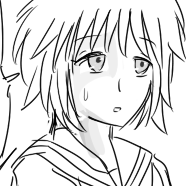
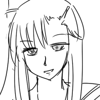
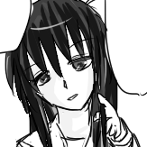
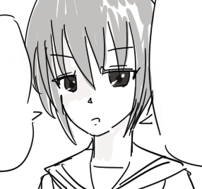
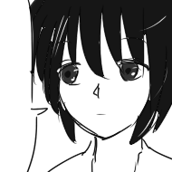
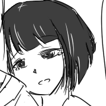
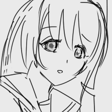

登場人物（第二版）
人物設定第二版です。そのななまで読んだ人向け。備忘録も兼ねてます。
裏設定とかも書いてあったりなかったり。
|  |
■七尾 光（ナナオ ヒカリ）
◆身長158cm / 胸のサイズ：普通
ガチな人。過去に失恋を経験している。
入学後は四苦八苦していたが、最近は想い人も友達もできてだんだん馴染んできている様子。
まだまだ悩みは多いが、不良上がりで型破りな未来と友情を深めたり、独特な価値観を持つ深雪への恋を通して成長しようとしているかもしれない。 |
|
|  |
■柏崎 未来（カシワザキ ミライ）
◆身長175cm / 胸のサイズ：巨
もうひとりの主人公のような存在。中等部出身。
中学時代は喧嘩っ早い性格が災いし、周囲から恐れられた。友人と絶縁状態になったことで自暴自棄になるが、大野先生に諭されたことで喧嘩をやめる。
高等部に進学してからは、ルックスの良さや運動センスもあって人気者になるが、光と深雪を守って不良を撃退したことで報復に遭い問題になる。このとき光の証言で周囲の誤解を解くことができ、それがきっかけで友情を深めた。
家庭環境が複雑で、似たような境遇の深雪とは何かと気が合う。かつての友人と深雪を重ねることも。 |
|
|  |
■黒部 深雪（クロベ ミユキ）
◆身長153cm / 胸のサイズ：貧
光の想い人。謎多き不思議ちゃんだが、過去に辛い経験があるらしい。
良くも悪くもマイペースで、自分だけの価値観を持っている。意外と饒舌で、自分が正しいと思うことは物怖じせずに口にする。一方で自分の価値観に縛られてしまう頑固な一面も。
表情をあまり変えないが、隠し事をしたりするときに髪を弄る悪癖がある。
光の好意にはなんとなく気づいている様子もあるが、その真意やいかに。 |
|
|  |
■砺波 湊（トナミ ミナト）
◆身長155cm / 胸のサイズ：大
光の姉貴分。光が女の子が好きなことを知っており、一番の理解者といえる存在。一方で、自分では光を幸せにすることができないと考えており、光を幸せにしてくれる人を探している。
クラス一の秀才の名に恥じない切れ者で、洞察力はなかなか。ふだんはとぼけた様子で何考えてるのかよくわからないので、実は結構怖い人かもしれない。
内向的な光をいじめから助けたりしていたので、見た目に反して男勝りなところがある。
小さいころは光より身体が大きく運動もできたが、現在はからっきしダメ。 |
|
|  |
■敦賀 晴海（ツルガ ハルミ）
◆6月16日生まれ / 身長160cm / 胸のサイズ：貧
副委員長。人付き合いが上手く、世渡り上手で情報通。クラス委員だけあって発言力もあるようで、光の噂が流れた際にはトラブルの対処にあたった。
基本的にはしっかりしているが、光の豆腐メンタルに配慮できなかったり、若干抜けているところもある。
深雪とは長い付き合いで、何かと頼りにされている。二人の関係は深雪いわく「あまり人に話すことではない」らしい。 |
|
|  |
■加賀 結（カガ ユイ）
◆身長162cm / 胸のサイズ：普通
モブキャラのようでモブキャラではなかった人。未来に憧れている。人目もはばからず抱きついたり、結構な自由人。
気弱で物怖じすることが多く、本人はなんとか変わりたいと思っている。
光からは「結ちゃん」、未来からは「加賀ちゃん」と呼ばれている。ちゃん付けしたくなる人柄らしい。
悪いことができない性格で、隠し事などは挙動ですぐバレる。
あることがきっかけで光のことを意識するようになる。 |
|
|  |
■阿賀野 岬（アガノ ミサキ）
◆身長156cm / 胸のサイズ：普通
未来の中等部時代の友人。回想シーンだけ登場。
両親を早くに亡くし親戚に引き取られたが、あまり家族仲は良くなかったらしい。周囲からも距離を置かれがちだった。
とある事情で現在高等部にはいない。
長い髪と陰のある表情は、深雪とどこか似ているらしい。 |
|